D'après le programme officiel tunisien (Thème 3, Objectif 2 — p.18-19), ce chapitre vise à :
1 Dégager les notions d'espèce et de lignée (race, variété, souche)
2 Définir une espèce par les critères de ressemblance et d'interfécondité
3 Distinguer caractère héréditaire et caractère acquis
4 Définir un phénotype et ses trois niveaux (macroscopique, cellulaire, moléculaire)
5 Illustrer par des exemples tunisiens (races ovines, variétés de tomates, souches bactériennes)
6 Comprendre que les races humaines ne sont pas scientifiquement valides
📚 Préacquis
Ch.1 — Tous les êtres vivants sont constitués de cellules eucaryotes possédant un noyau contenant l'ADN.
Les caractères des individus dépendent de l'information génétique contenue dans l'ADN du noyau.
La reproduction sexuée implique deux parents et produit des descendants qui leur ressemblent.
Dans la vie courante, on parle de races pour les animaux domestiques et de variétés pour les plantes cultivées.
❓ 3 Questions directrices
Comment identifier l'appartenance d'individus à une même espèce ?
Par quoi les lignées (races, variétés) se distinguent-elles ?
Qu'est-ce qu'un caractère héréditaire et comment se manifeste-t-il ?
🧠 Comprendre avant de mémoriser
Ce chapitre définit les concepts de base de la génétique : espèce, lignée, caractère héréditaire et phénotype. Une espèce se définit par deux critères : la ressemblance ET l'interfécondité. Au sein d'une espèce, les individus présentent des variations (races, variétés) qui restent interfécondes. Chaque caractère héréditaire s'exprime sous plusieurs formes appelées phénotypes. Ces notions sont fondamentales pour comprendre la mitose (Ch.3) et la génétique (Ch.4).
Clique sur chaque notion · Pièges CAPES et connexions révélés
🧬
Notion d'espèce
Ressemblance + Interfécondité
🐑
Lignée / Race / Variété
Barbarine · Noire de Thibar · Sicilo-Sarde
📋
Caractère héréditaire
Spécifique · De lignée · Individuel
⚠️
3 Pièges classiques
Erreurs fréquentes CAPES
🔗
Connexions manuel
Ch.1 · Ch.3 · Ch.4
🧬 Qu'est-ce qu'une espèce ? — Les deux critères
Critère
Définition
Exemple
Ressemblance
Individus présentant des caractères morphologiques, biochimiques, chromosomiques et comportementaux communs
Tous les chiens (Canis familiaris) partagent un plan d'organisation commun
Interfécondité
Capacité à se reproduire entre eux et à donner une descendance fertile
Chien × Chien = Chiots fertiles. Chien × Loup = Hybrides stériles ou non viables
💡 Le critère d'interfécondité est DÉTERMINANT
Deux populations peuvent se ressembler sans appartenir à la même espèce. Ex : le Loup (Canis lupus) ressemble au Chien (Canis familiaris) mais ils ne sont pas interféconds → deux espèces distinctes. Le Mulet (âne × jument) et le Bardot (cheval × ânesse) sont stériles → l'âne et le cheval sont deux espèces distinctes malgré leur ressemblance.
🐑 Lignée, Race, Variété, Souche — des sous-ensembles de l'espèce
Terme
Définition
Exemple tunisien
Race
Ensemble d'animaux d'une même espèce présentant des caractères communs distinctifs
Barbarine, Noire de Thibar, Sicilo-Sarde
Variété
Ensemble de végétaux d'une même espèce avec des caractères communs
Tomate Jalta, Tomate Carmello
Souche
Ensemble de microorganismes d'une même espèce avec des caractères communs
Colibacille sensible ou résistant à l'ampicilline
💡 Races humaines = concept NON valide scientifiquement
Le manuel précise (p.191) que pour l'espèce humaine, la science affirme la non-validité du concept de "races humaines". Les individus d'une même population montrent des différences génétiques énormes. Deux êtres humains de couleurs différentes peuvent être génétiquement plus proches que deux individus de même couleur. Important pour le CAPES.
📋 Les 3 types de caractères héréditaires
Type de caractère
Définition
Exemple
Spécifique
Présent chez TOUS les individus de l'espèce
Tous les chiens ont 78 chromosomes · Tous les humains ont 46 chromosomes
De lignée
Présent chez les individus d'une même lignée/race/variété
Barbarine : tête noire et corps blanc · Sloughi : corps élancé
Individuel
Varie d'un individu à l'autre dans l'espèce
Couleur des yeux · Masse corporelle · Taille
💡 Caractère acquis ≠ Caractère héréditaire
Un caractère acquis se développe au cours de la vie mais n'est PAS transmis génétiquement. Ex : musculature développée par l'exercice, colonne vertébrale déformée, obésité. Un caractère héréditaire est transmis des parents aux descendants via l'ADN. Ex : groupe sanguin, couleur des yeux, capacité à enrouler la langue.
⚠️ 3 Pièges classiques CAPES
⚠️ Piège 1 — Ressemblance seule ne suffit pas pour définir une espèce ▼
Deux organismes peuvent se ressembler sans appartenir à la même espèce. Ex : le Dauphin (mammifère) ressemble au Requin (poisson) mais ce sont deux espèces très éloignées. Le critère DÉTERMINANT est l'interfécondité avec descendance fertile. La ressemblance est un indice, pas une preuve.
⚠️ Piège 2 — Lignée ≠ Sous-espèce ≠ Espèce ▼
Les races, variétés et souches sont des lignées au sein d'une MÊME espèce. Elles restent interfécondes entre elles. Une Barbarine × Noire de Thibar donne des agneaux fertiles. Ne pas confondre avec les sous-espèces (ex: Canis lupus lupus — loup d'Europe) qui peuvent être un premier pas vers la spéciation.
⚠️ Piège 3 — Phénotype = 3 niveaux d'expression ▼
Le phénotype se définit à 3 échelles : macroscopique (organisme visible), cellulaire (hématies falciformes vs biconcaves) et moléculaire (HbA normale vs HbS anormale). Une erreur fréquente est de définir le phénotype uniquement par l'apparence extérieure. Le phénotype moléculaire conditionne le phénotype cellulaire qui détermine le phénotype macroscopique.
🔗 Connexions avec le manuel
← Chapitre 1 — La Cellule
L'ADN du noyau (Ch.1) est le support moléculaire des caractères héréditaires introduits ici. Les phénotypes cellulaires et moléculaires s'observent au microscope.
→ Chapitre 3 — Mitose
La reproduction conforme (bouturage, clonage) conserve les caractères héréditaires. La mitose transmet l'intégralité de l'information génétique aux cellules filles.
→ Chapitre 4 — Information génétique
Les caractères héréditaires sont portés par l'ADN. Les mutations (Ch.4) créent de nouveaux allèles → nouveaux phénotypes → diversité des lignées.
Exemples tunisiens
Races ovines tunisiennes (Barbarine, Noire de Thibar, Sicilo-Sarde), variétés de tomates (Jalta, Carmello), souches de colibacilles.
💭 Questions de réflexion
1. Pourquoi le mulet (âne × jument) est-il stérile ? Qu'est-ce que cela nous apprend sur la définition de l'espèce ?
Le mulet possède 63 chromosomes (31 de l'âne + 32 du cheval). Lors de la méiose, les chromosomes ne peuvent pas s'apparier correctement (nombre impair) → gamètes non viables → stérilité. Cette stérilité prouve que l'âne (62 chr) et le cheval (64 chr) sont DEUX ESPÈCES DISTINCTES malgré leur ressemblance. Le critère d'interfécondité avec descendance FERTILE est déterminant.
2. Une Barbarine et une Noire de Thibar peuvent se reproduire et donner des agneaux fertiles. Pourquoi dit-on qu'elles appartiennent à la même espèce mais à des races différentes ?
Elles partagent les caractères spécifiques de l'espèce ovine (même caryotype) ET sont interfécondes avec descendance fertile. Mais elles présentent des caractères de lignée distinctifs : Barbarine = tête noire, corps blanc, queue à 2 lobes. Noire de Thibar = entièrement noire, résistante au millepertuis. Ces caractères de lignée sont héréditaires mais n'empêchent pas l'interfécondité → ce sont deux races de la même espèce.
🐾 Activité 1 — Notions d'Espèce et de Lignée (p.185–188)
Les critères de distinction — espèce et race
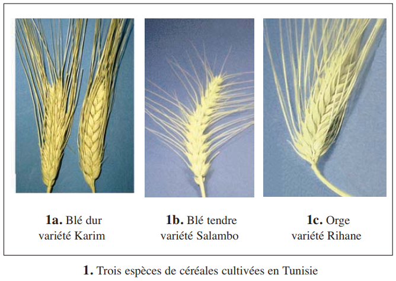
📷 Fig.1a — Barbarinep.184
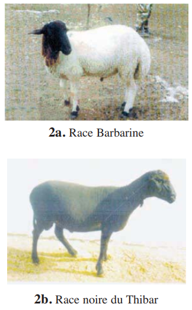
📷 Fig.1b — Noire de Thibarp.184
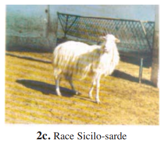
📷 Fig.1c — Sicilo-Sardep.184
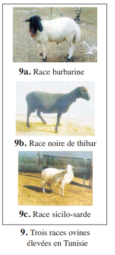
📷 Fig.9 — Trois races ovinesp.188
Les races ovines tunisiennes (p.188) :
Caractère
Barbarine
Noire de Thibar
Sicilo-Sarde
Couleur
Tête noire, corps blanc
Noire
Blanche
Queue
Large à 2 lobes
Longue et fine
Large et fine
Fertilité (%)
86
85
89
→ Elles partagent les caractères spécifiques ovins + sont interfécondes = MÊME espèce, races différentes.
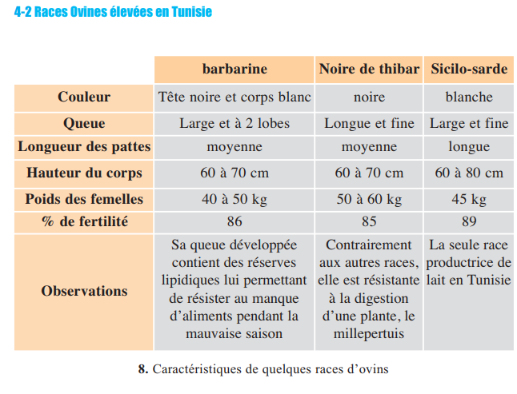
📷 Fig.8 — Caractéristiquesp.188
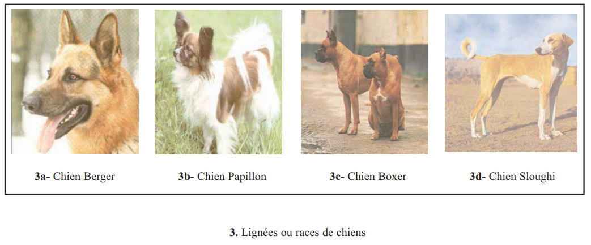
📷 Fig.3 — Races de chiensp.185
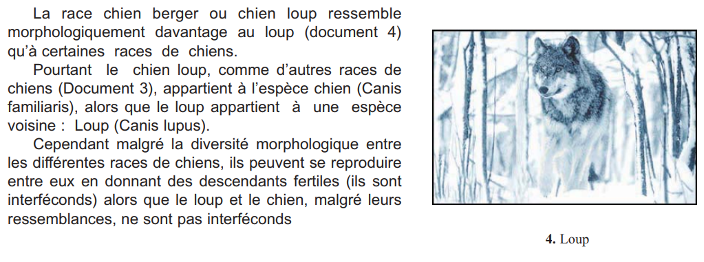
📷 Fig.4 — Loupp.185
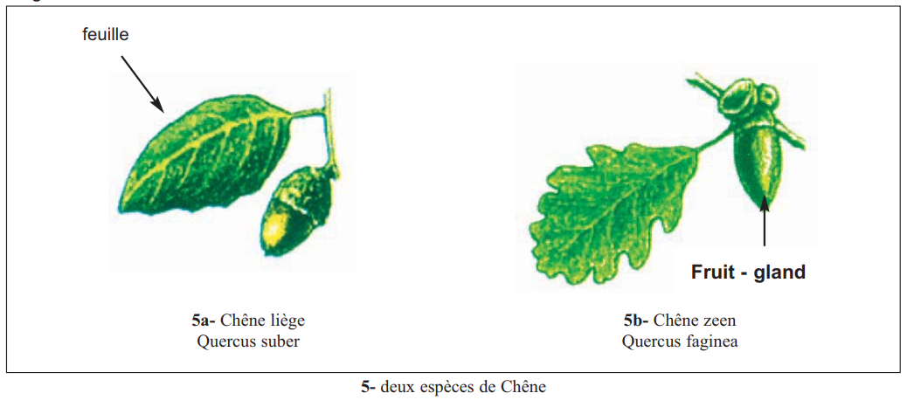
📷 Fig.5 — Chênesp.186
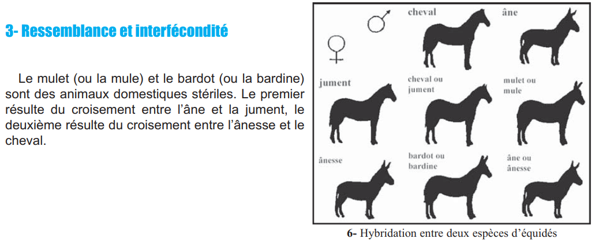
📷 Fig.6 — Hybridationp.186
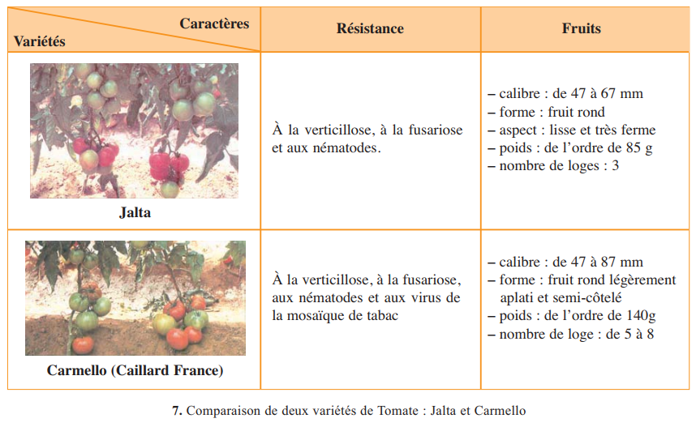
📷 Fig.7 — Variétés de tomatep.187
✏️ Mini-quiz — Espèce et Lignée
1. Les deux critères qui définissent une espèce sont la .
2. La Barbarine et la Noire de Thibar appartiennent à la même .
3. Le mulet est stérile donc l'âne et le cheval sont .
4. Pour les végétaux, une lignée s'appelle une .
🧬 Activité 2 — Notion de Caractère Héréditaire et Phénotype (p.189–190)
Caractères héréditaires — les 3 types
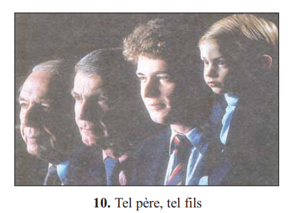
📷 Fig.10 — Tel père, tel filsp.189
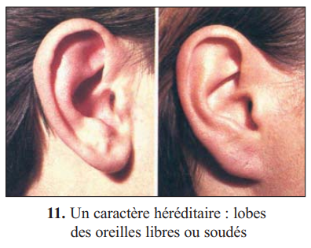
📷 Fig.11 — Lobes oreillesp.189
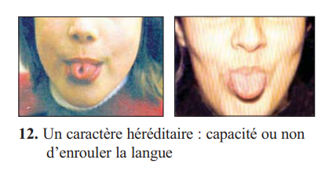
📷 Fig.12 — Languep.189
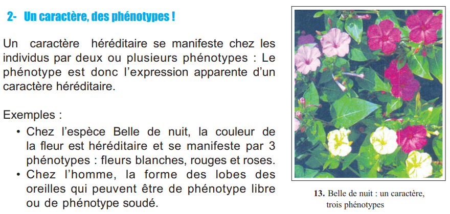
📷 Fig.13 — Belle de nuitp.190
Type de caractère
Définition
Exemple humain
Spécifique
Présent chez TOUS les individus de l'espèce
46 chromosomes, synthèse de l'hémoglobine
De lignée
Commun aux individus d'une même lignée
Couleur de peau dans une population
Individuel
Varie d'un individu à l'autre
Groupe sanguin, capacité à enrouler la langue
📌 Retenons — Phénotype : la 3ème notion clé
Phénotype :
expression apparente d'un caractère héréditaire. Un caractère peut avoir plusieurs phénotypes.
Caractère = forme des lobes d'oreilles. Phénotypes = lobes libres OU lobes soudés.
💡 La drépanocytose — exemple de phénotype à 3 niveaux
Macroscopique : individu sain (phénotype normal) ou malade (anémie, incapacité à l'effort). Cellulaire : hématies biconcaves (normales) ou hématies falciformes (anormales, bloquent les capillaires). Moléculaire : HbA normale (soluble, transporte O₂ efficacement) ou HbS anormale (non soluble, forme des fibres rigides, transporte mal O₂). Le phénotype moléculaire détermine le phénotype cellulaire qui détermine le phénotype macroscopique.
✏️ Mini-quiz — Caractères et Phénotypes
1. Un caractère héréditaire individuel chez l'Homme est .
2. Le phénotype se définit à .
3. La capacité à enrouler la langue est un caractère .
📋 Bilan (p.191–192)
1Une espèce se définit par deux critères : la . Le critère est déterminant.
2Au sein d'une espèce, on distingue des lignées : les . Les individus de races différentes restent .
3Les caractères héréditaires sont transmis des parents aux descendants. Ils peuvent être . Un caractère acquis n'est PAS héréditaire. Un phénotype est .
📋 Bilan Révision — Vérifie chaque objectif du programme
Un exercice par objectif pédagogique. Corrige chacun avant de passer au suivant.
1 Définir une espèce par les critères de ressemblance et d'interfécondité
Compléter : Une espèce regroupe les individus qui . Le critère déterminant est l'.
2 Distinguer espèce et lignée (race, variété, souche)
Associer : · · .
3 Distinguer caractère héréditaire et caractère acquis
Le groupe sanguin est un caractère . La musculature développée est un caractère .
4 Définir un phénotype et ses 3 niveaux
Le phénotype est . Il se définit à 3 niveaux : .
5 Identifier les 3 types de caractères héréditaires
46 chromosomes chez l'Homme = caractère . Capacité à enrouler la langue = caractère .
6 Expliquer pourquoi les races humaines ne sont pas scientifiquement valides